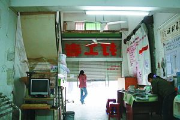
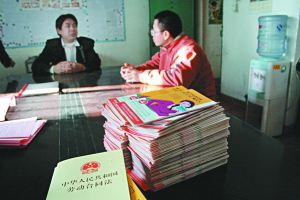

珠三角劳工维权组织因无合法身份陷入困境

两三个月来，打工者中心都半开着门，黄庆南遭砍的阴影尚未完全消除。简陋的办公室内，一台电脑是最值钱的家当。

在珠三角民间劳工维权机构，劳动合同法和自印的维权手册是最常见的资料。本报记者 徐春柳 摄
2007年11月，深圳某“劳工维权NGO”负责人黄庆南遇袭，几乎丧命，至今未能痊愈。
这场发生在《劳动合同法》实施前夜的恶性案件，被认为对黄庆南宣传劳动法、替农民工维权所遭遇的报复。而此后警方披露的案情，也证实了这一推测。
黄庆南一案的背后，显现的是珠三角地区民间劳工维权组织所面临的艰难困境：资金匮乏、无正式身份、被无良老板报复。
有观点认为，在外来人员众多而法治与良治尚未完善的前提下，此类的民间组织是对政府执法盲点的有效补充，应有存在必要。
目前，深圳市乃至广东省工会，已开始探索将民间劳工维权组织纳入管理。但对此行为，珠三角数十家民间劳工维权组织内部，尚存不同声音。
珠三角“劳工维权NGO”举步维艰
“打工者中心”负责人遭袭暴露数十家此类机构生存困境，深圳总工会正探索将当地机构“纳入体系”
住院刚满两个月，黄庆南便搬出了医院，虽然左腿依然密密麻麻包裹着———在做了四次手术后，腿上的大量肌肉与神经已经萎缩。
由于费用问题，这位深圳“打工者中心”的负责人，只能暂时租住在医院附近的出租房中，以便随时回医院检查。
2007年11月20日下午，在距工作地点不足百米的小巷中，黄庆南遭到两名持刀男子的袭击。黄左腿的筋骨、血管、肌腱与神经全被砍断，抢救时输了4000CC的血，相当于一个成人身上的血量。
“我没有得罪过任何个人，除了给工人做劳权教育。”黄庆南说。而自愿照顾他的工友段先生则认为，黄庆南是因为宣传《劳动合同法》得罪了人。
今年2月，警方披露的案情证实了黄庆南与段先生的推测：5名落网嫌疑人供述，因认为黄庆南与工人合伙对付他们，对其厂房出租收入影响很大，便对黄庆南实施了报复。
而事实上，黄庆南仅仅是对工人们进行维权法律知识的宣传，让工人们知道了自己的权利。
在深圳当地与黄庆南一样的劳工维权人士们看来，黄庆南事件并不是个偶然事件，这暴露了民间劳工维权组织生存困境。
“这类自主维权组织不但面对着资方，还有着身份、资金、各种各样的困难。”华南师范大学黄岩博士一直保持着对珠三角地区劳工组织的关注和研究。
非常事件
“黄庆南的行为是让工人们知道自己的权利所在，就像指出了小偷一样，当然会受到小偷的记恨。”
在黄庆南遇袭之前，打工者中心便已发生了一些不寻常事件。
打工者中心的林卫华说， 2007年10月11日晚上，3个手持钢管的年轻人将中心的玻璃门和卷闸门砸烂后扬长而去。
11月14日晚上，几名手持钢管的男子再度将玻璃门砸烂，并冲进办公地点，砸坏了桌椅。一名男子甚至对着林卫华大喊：“我叫你们开不了店。”
6天后，就发生了黄庆南被砍的事件。这天，距离2008年1月1日《劳动合同法》实施之日，不足两月。这部法律规定，企业在雇佣和解雇员工时将面临更为严格的监管。
11月20日事发前几个月，黄庆南便带着由打工者中心员工为主组建的劳动法宣传队，在工人当中宣传《劳动合同法》。
“一些工厂挣的是违法的利润，是在像小偷一样偷工人的钱，而工人不知道。黄庆南的行为是让工人们知道自己的权利所在，就像指出了小偷一样，当然会受到小偷的记恨。”深圳当代社会观察研究所主任刘开明博士称。
黄庆南于2003年12月注册成立的“打工者中心”，主要的工作即是开展工人教育、劳动法咨询和工伤互助。他们把对劳工有用的信息汇编成小册子，免费赠阅，里面的内容包括：怎样算工资、找工作小心被收押金、进厂要签合同、工厂要为工人买社会保险、工伤赔偿的获得途径，以及和打工者利益密切相关的劳动和社会保障局、社保站等政府机构的电话等等。很多时候，他们还会把相关的内容制作成书，拿到工人聚居区、工厂门口，夜市人流集中的地方发放，指点工人在权利受损时如何维权。
根据记录，2006年，该中心咨询个案就超过2400个。
黄庆南称，工人们非常关注《劳动合同法》，这给工厂主们很大的压力。“90%的小工厂不支付加班费，工人如果依照《劳动合同法》相关的规定，追讨二年的加班费，2、3万块没问题，工厂主对付不了法律，气就撒在我身上。”
警方公布案情后，打工者中心工作人员罗春丽经过查询后证实，的确有嫌疑人工厂的数名工人多次来中心咨询过法律知识，反映该厂加班时间长，工资低等。“我们只是提供法律知识，想不到这就得罪了他们。”罗春丽说。
劳工维权NGO
“现在整个珠三角，有30家以上的此类免费服务的维权NGO。”他们习惯于称乎自己为“劳工维权NGO”。
一个事实是，在珠三角，打工者中心只是众多专门为打工者维权的民间组织中的一个。黄岩介绍，这类专为农民工维权的民间组织，发端在上个世纪。
1998年8月，一位四川保安、28岁的廖晓峰在广州番禺成立了珠三角第一个打工者维权机构“打工族文书处理服务部”，经营范围是文书处理。但实质上，该服务部主要是帮助工伤者打官司，提供法律咨询服务，并收取一定的费用。
毕业于华南师大的曾飞洋，于1999年接手了“打工族文书处理服务部”，并完成了向非赢利机构的转型，“工伤个案越做越多，我们越有名，求助就越多。”
2001年开始，曾飞洋在个案的基础上，开始对农民工做一些普法工作，以讲课为主。在申请到德国的一个基金后，服务部的活动得以开展壮大。
曾飞洋与中山大学法学院的师生合作，组织开放式的课堂，最多的一次，有300多个农民工参加。“工人讨论最多的是劳动权利，工资和加班费。”曾飞洋介绍，当地有老板对此很有意见，干涉了活动，开放式讲座被迫中止。
2003年，“打工族文书处理服务部”建立社区工人中心，开始进行工伤者的探访，以及个案的辅导。
就在曾飞洋完成转型的同时，江苏扬州人景祥来到深圳打拼，他在深圳劳动和社会保障局边上的宾馆住着，看到每天到劳动和社会保障局来求助的工人都排着长队。
“我跟他们聊天，发觉他们缺乏基本的法律常识，我想帮助他们。”热衷于行动的景祥开始对农民工进行个例帮助。在对“打工族文书处理服务部”参观后，他停止了自己从事的装修工作，成立了“珠江工友”，全职投入到农民工的维权工作当中。
“现在整个珠三角，有30家以上的此类免费服务的维权NGO。”曾飞洋介绍。作为最早的从业者，他对此领域十分熟悉，他们习惯于称呼自己为“劳工维权NGO”，意思是非官方而且是不以赢利为目的的组织。
而在珠三角做调研的新加坡国内大学的博士生和经纬得到的数字则是50余家。和也意识到，在这类维权组织中，既有曾飞洋这样的专职人士，也有黄庆南这样出身工人的民间草莽，还有景祥这样的原来与工人无关的行动主义者。
“此类维权机构之所以在珠三角出现，是有深刻原因的。”刘开明表示，珠三角的经济活动90%都是市场经济运行，是中国市场化最发达的地区，而市场经济所需要的法治与良治(good governance)，并没有像香港与新加坡那样建立起来，所以工人权利受损坏非常严重，冲突显现。
“一段时间以来，全国的劳动争议案，广东要占到全国的40%，光深圳就占到20%。”刘认为，另一个原因是，4000万外来人口的利益与本地人的利益的不一致，政府更多维护的是本地人口的利益，他没有动力也没有压力去改变。“这样就形成了维权的市场。”
艰难现状
相对于资金问题，这些民间劳工维权组织更担忧的是政府的不理解。身份也难在一朝一夕解决。
除了“打工族文书处理服务部”吸引到来自德国的基金外，其余类似的维权机构，几乎都存在海外资金的背景。但即便如此，他们的运营依然捉襟见肘。
“此类维权组织都会存在资金上的困难。”刘开明介绍，国内没有这方面的资金来源，而99%的外国政府与NGO投放到中国的资金，都由政府或政府掌控的机构来分配，“只有不到1%流入民间，其中大部分是用于艾滋病、环保、扶贫，劳工维权的只占极小部分。”
记者走访的维权机构中，所有的办公条件都比较恶劣，地点都设在租金便宜的居民楼或偏僻的小店面内。黄庆南的打工者中心只有一台电脑，是供工友学习用的。“11月14日有人来砸店的时候，幸亏有个工友用身体挡住了电脑，那伙人没有发现，才保住了。”工作人员林卫华指着藏在楼梯后的旧电脑说，这是整个中心最值钱的家当。
曾飞洋介绍，他申请到基金约在一年50万人民币，而景祥表示他申请到的更少，很不够用。“我们现在都是工商注册，没有办法向社会募捐和接受捐助。却还要交税。”这些机构都没有钱做广告，靠的往往是工人间的口碑相传。
深圳宝安区“春风劳动争议服务部”的负责人张治儒解决资金问题的办法是有选择的接一些个案，做收费的公民代理。但其他的民间劳工维权组织普遍不认同这种模式，他们认为收费有悖维权的本质。
数名维权组织的负责人都称，房东受到了压力，要求他们搬离办公地点。
相对于资金问题，这些劳工维权组织更担忧的是政府的不理解。
除了曾飞洋、景祥这样的免费给工伤者做个案，珠三角还广泛存在着收费的公民代理。由于一些公民代理存在一些不规范的问题，珠三角一些地区出台地方规定，限制公民代理权。
今年1月9日，深圳市公安、司法、劳动、地税、工商、城管等八个部门联手，打击“黑律师”，矛头直指活跃在当地的“公民代理”。由于有的劳工维权组织常常给一些工人做维权的个案辅导，甚至帮着出庭，因此包括黄庆南的打工者中心在内，部分维权组织也被列为“黑律师窝点”。对此，黄庆南感觉委屈：“我们其实从来不做个案，免费的都不做，更不要说收费的了。”
上个星期，景祥帮一个工伤七级的工友准备劳动仲裁，到了开庭时，以朋友身份，仲裁庭不让他做代理，只能旁听，景祥出示了免费代理的协议，可仲裁庭还是不让。“一些工人的表达能力、对法律的理解都有问题，找人做代理是没有办法的事，为什么不让找？那些收费的代理出了问题，自然有相关部门去处理，为什么要限制公民的天然权利。”景祥很不理解。
“厂里可以随便找个经理什么的做代理，工人却不可以。”张治儒也很不理解这些规定，但他比较灵活，挂靠了一个律师事务所，他们做前期的准备，出庭时让有执照的律师出庭，“但这就要给律所费用了。”
而这一切，都是源于身份问题。
“工商注册对我们来说很荒谬，不但无法筹资，还要交税。”景祥说找不到部门来挂靠。
同样为了取得民间组织的注册，曾飞洋找过工会、共青团、劳动、民政、司法部门，希望能够挂靠在这些官方机构下面，但没有一家愿意。他很清楚，由于我国还没有《社团法》，NGO的正常注册一般来说不太可能，“取得合法地位并不是一朝一夕能解决的。”
存在必要
“民间劳工维权组织的存在，是对政府法规及行政执行层面的必要并有益的补充。”
虽然生存艰难，但这些维权组织的负责人们，无人轻言放弃。
曾飞洋认为，民间劳工维权组织的存在，是对政府法规及行政执行层面的必要并有益的补充。
他认为，从行政层面上来说，政府在立法、制定劳动标准等方面，已经做得很好，需要加强的是在劳动监察方面，也就是维护民工的既有权力。而民间劳工维权组织在这方面的维权普法方面是成功的。
前年底，来自湖北襄樊的24岁小伙子杨勇想辞工，但老板不给工钱。杨勇找到景祥，开始了他第一个维权官司。
在官司赢了后，他又开始找工作，发现这些小厂都不给工人签合同，加班费都比规定的要低，一连换了四个厂都这样，他开始了“王海打假”式的诉讼，一个个告这些工厂。
“5场官司大多数赢了，也有和解的，一共赔了我近2万元。”杨勇有点得意，因为这差不多相当于他一年工资的两倍了。
“如果每个民工都有了像杨勇这样的法律知识，还会有企业主不签劳动合同，不给加班费吗？”给杨勇提供法律指导的景祥说。
“我们掌握了基层的服务网络，与普通打工者有着密切的联系。”曾飞洋介绍，在他的机构里，7名工作人员有5名是工伤者，他们到定点医院去探访工伤者，往往能起到现身说法的作用。
在深圳市第二医院的骨科，来自宁夏固原的20岁工伤者小彭，在一家塑料厂打工时被机器夹伤，手指与腕骨多处骨折。由于没有合同，也不懂法，根本不知道怎么维护自己的合法权益，在取得了维权组织工作人员提供的材料与联系方式后，小彭很高兴，“有什么要帮忙的我一定去找你们。”
“这些NGO在一些方面的作为，反而比工会与劳动部门大。”中山大学政务学院郭巍青教授认为，政府在面对劳资纠纷时，通常有三种手段，一是管制，如制定最低工资，二是提供福利，三是组织创新。“福利提供的越好，管制可以越小，而有效的组织，可以降低福利的成本。”郭巍青认为，在中国，政府管理部门与工人的需求之间存在着巨大的隔阂，工人特别是农民工的问题，政府丢给了企业与农民工自身，由于工人缺乏清楚的利益表达，所以在广意上有利于资方。民间劳工维权组织提高了农民工自身的能力，所以当然有必要存在。
“我们一个月要解决100个求助，其实就是给政府门口减少了100个人。其实是便于政府管理。”景祥介绍，他通过帮助农民工维权，至少制止了6起要去北京上访的案例。
工会“收编”？
深圳市总工会拟在各街道成立工会维权服务中心，计划把“这帮人”纳入，让他们作为律师助理进行维权工作。
广东省总工会副主席孔祥鸿在接受媒体采访时表示，不能将“公民代理人”这一职业维权群体等同于“黑律师”、“土律师”，一味“打压”不是办法。与其把“公民代理人”职业维权群体推向对立面，不如采取一定程序把他们“收编”在工会等部门。
曾飞洋也表示，希望得到工会等部门的指导，也很愿意接受工会的领导，加强对民间劳工维权组织的监督。
事实上，深圳工会已经开始做相关工作。
2007年10月19日，深圳市总工会召集张治儒等维权机构在内的16个“公民代理”座谈。在此之前，深圳总工会法律部张友泉部长也曾到张治儒的办公地点来实地察看。会议透露，在一项初步计划中，深圳市总工会拟在各街道成立工会维权服务中心，计划把“这帮人”纳入，初定60人的名额，让他们作为律师助理进行维权工作。
对此，深圳市总工会副主席王同信表示，工会的确在这方面已经进行调研，而且从今年九月份就开始了。目前已经广泛接触了这些团体。“我们觉得积极地和他们沟通，把他们纳入到工会这种有序维权的体系当中去，这个探索是应该进行的。”
但他同时表示，这些民间组织本身的人员素质等情况良莠不齐，“所以这个过程，工会要做大量工作，难度也很大。”
曾飞洋称，“在微观方面，政府部门与普通劳动者的沟通往往不够。这点我们正相反，所以如果能结合起来最好。满足工人日益增长的各种就业、生活的需求，我们与他们的目标一致。”
对于黄庆南的受伤，工会也批下了1万5的慰问金。“但具体的合作事宜，还没有与我们有过联系。”黄庆南称。
与曾飞洋、黄庆南的观点相反，刘开明不认同工会“招安”的模式，他认为应该多给民间组织空间，不能太苛求，而政府最应做的是创造一个法制的环境，而不是使好不容易自发形成的公民社会的力量被收编。
张治儒也称，不认同完全受制于工会或政府，“这会丢失民间劳工维权组织的独立性，最好工会与民间劳工维权组织是一种发包与承包的关系。”
由于黄案的影响，不少维权组织已经停止了维权讲座宣传。“兔死狐悲，我们也在观望。”景祥说。虽然如此，景祥还是很乐观，“我们在夹缝中生存，可盘古开天地不也是先开了一条缝吗！”
新闻来源：新京报
本报记者 徐春柳 深圳报道